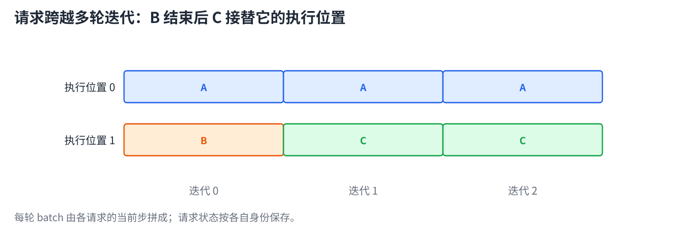
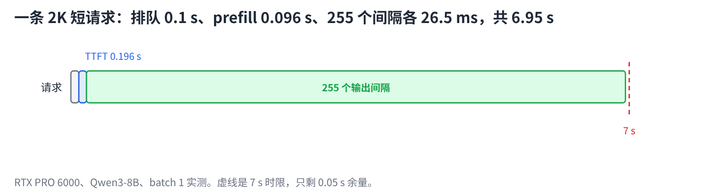
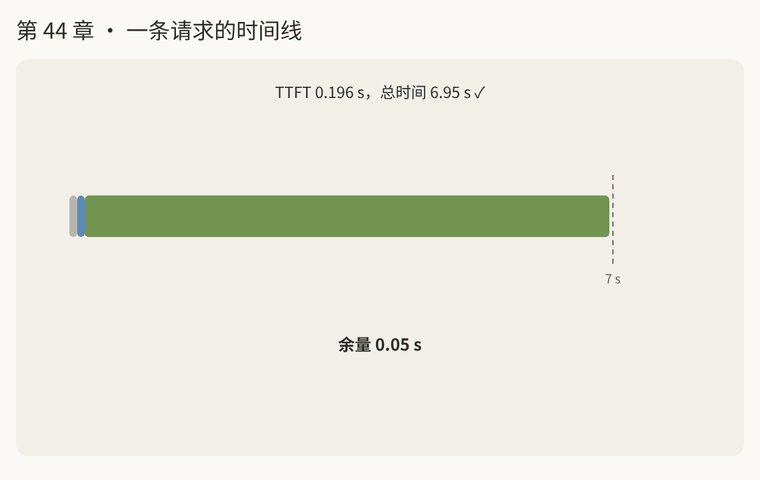

第 44 章 · 推理请求的执行过程与资源需求：一条请求的时间线和账本
本地运行
git clone https://github.com/wikieden/ai-infra-from-constraints
cd ai-infra-from-constraints/code/notebooks
pip install jupyterlab torch numpy
jupyter lab ch44_inference_request.ipynb也可以下载后直接用 VS Code 打开 .ipynb 运行。需要 GPU 的章节在 Colab 里选「代码执行程序 → 更改运行时类型 → GPU」。
本章回答：一条推理请求从到达到最后一个 token，时间花在哪几段？为什么只是插进一次别人的 prefill，就从 6.95 秒变成超时？一张卡给 KV 留 12 GiB，能同时接多少条短请求、多少条长请求？TTFT、ITL、吞吐各衡量什么？
讲解日期：2026-11-24 · 上一章：第 43 章 从通信改进到任务完成 · 下一章：第 45 章 批处理与请求调度
对应原文：materials/ai-infra-book/manuscripts/08-推理优化.md章首 L1–L18、§8.1 L20–L99（图 8-1、8-2）
本章缩写：TTFT = Time To First Token（首个 / token / 时间）· ITL = Inter-Token Latency（token 之间的 / 延迟）· SLO = Service Level Objective（服务 / 水平 / 目标）。全部缩写见 缩写与术语表
第 6、7 部分讲计算怎么切、卡之间怎么通信。本部分固定一组加速器，看怎么组织请求：批处理、调度、KV 管理、压缩、卸载、推测解码。
本部分的贯穿实例：Qwen3-8B，一张 RTX PRO 6000 Blackwell 工作站卡（96 GB、1792 GB/s、BF16 503.8 TFLOP/s、600 W）。实例分到 32 GiB：权重 BF16 约 15.3 GiB，KV 及辅助缓冲预留 12 GiB，其余约 4.7 GiB 给激活和 CUDA Graph 缓冲。
| 短对话 | 长上下文 | |
|---|---|---|
| 输入 | 2048 token | 8192 token |
| 输出 | 256 token | 256 token |
| 公共前缀 | 0 | 6144 token（系统提示和工具定义） |
| 完成时限 | 7 s | 7 s |
讲解
第一步：请求、batch、调度迭代（2026-11-24）
类比：饭馆的一张长桌。 每位客人（请求）点自己的菜、吃自己的节奏；厨房每一轮（调度迭代）把桌上所有人"下一道菜"一起做（batch）。有人吃完离席，空位马上能让新客人坐。
原文 L24–L48：
- 请求：有独立输入、输出和结束条件的一份推理工作。
- batch：同一次加速器执行里一起算的一组 token。
- 调度迭代：调度器选本轮工作、提交、处理结果的一个周期；一条请求跨越很多迭代，每轮的同伴可能不同。
请求到达 → 排队 → 调度器把它加进 batch 并分配 KV 空间 → prefill（输入 token 已知，可以一起算，存下各层的 K、V，最后产出第一个输出 token）→ decode（把刚生成的 token 送回去，读整份上下文 KV，再生成下一个）。同一条请求只能一步一步来，不同请求的当前步可以一起算。结束后私有 KV 释放，公共前缀可以留给后来者（第 46 章）。

图 44-1 · 执行位置是每轮给一条活跃请求预留的一行计算。
一句话：一条请求逐步推进，一轮 batch 由不同请求的当前步拼成。
第二步：一条短请求的 6.95 秒（2026-11-24）
类比：等外卖。 下单后先排队（0.1 s），厨房开火到第一道菜出锅（prefill），之后每隔一会儿上一道。总时间 = 第一道菜到手的时间 + 之后每道菜的间隔之和。
原文 L34–L46、L82–L98：实验 8-1 单独跑一条 2K 短请求，prefill 返回首 token 约 0.096 s，之后每 26.5 ms 一个：
只留了 0.05 s 余量。生成期间插进另一条短请求的 prefill，某个间隔从 26.5 ms 变成约 123 ms，总时间 7.05 s：每个 token 的计算一样，只是执行顺序变了，请求就超时了。

图 44-2 · 首 token 把时间线分成两段：前一段决定用户何时看到响应，后一段决定何时拿到完整答案。
吞吐：batch 16 时一轮约 27.44 ms 出 16 个 token，约 583 token/s；单条请求只有约 38 token/s。正确性也要算：第 49 章只数"正确且按期"的请求。
一句话：TTFT 管第一眼，ITL 管读得顺不顺，总时间管答案何时可用；调度改的是这条线上某一段的长度。
第三步：12 GiB 能装多少条请求（2026-11-24）
类比：停车场。 车位按车长分，车停进来以后还会"变长"（KV 随输出增长）；按进场时的车长卖票，到后来就停不下了。
原文 L54–L78：
| 独立请求 | prefill 后 | 输出 256 个后（每块 16 token 分配） | 12 GiB 容纳 |
|---|---|---|---|
| 短对话 2K | 288 MiB | 324 MiB（2304 token） | 37 |
| 长上下文 8K | 1152 MiB | 1188 MiB（8448 token） | 10 |
- 只按 prefill 后的大小算，会放进 42 条短请求，生成完要 13,608 MiB：接收时就按生成阶段预留。
- 16 条长请求光输入的 KV 就要 18 GiB，超过 12 GiB；前 6144 token 公共前缀占 864 MiB，共享后能省出来（第 46 章）。
- 多卡实例要按每张卡分别列：某张卡空着的内存，不改放置就用不到另一张卡上。
场景代码：vLLM 里用 gpu_memory_utilization 给实例划内存，max_model_len 决定每条请求最多占多少 KV（真实 API）：
from vllm import LLM, SamplingParams
llm = LLM(model="Qwen/Qwen3-8B", dtype="bfloat16",
gpu_memory_utilization=32 / 96, # 实例只用 96 GB 里的 32 GiB 左右
max_model_len=8192 + 256) # 输入 + 输出的上限，决定按多长预留
out = llm.generate(["你好"] * 16, SamplingParams(max_tokens=256))
补基础：一次生成的全链路见 llm-full-stack 全链路地图；KV 的来源见第 8 章 一次生成的预算。
一句话：权重所有请求共用，KV 每条请求各自随输出增长；能接多少条要按生成结束时算。
动画演示：一条请求的时间线

可交互版：animations/44-inference-request.html（滑块：排队时间 0–1 s；输出间隔 20–40 ms；插入的 prefill 次数 0–5）。
怎么看：
- 横条依次是排队（灰）、prefill（蓝）、255 个输出间隔（绿）（第二步）；
- 竖虚线是 7 秒时限，越线变红；
- 右边显示 TTFT 和总时间；
- 播放：基线 6.95 s → 插一次 prefill（7.05 s 超时）→ 排队 0.5 s → 间隔 20 ms。
练习与作答记录
题 1（第二步）：排队 0.2 s、prefill 0.3 s、输出 128 个 token、每个间隔 30 ms。TTFT 和总时间各多少？时限 5 s 还剩多少余量？
作答记录：（待作答）
题 2（第三步）：给 KV 留 20 GiB，输入 4096、输出 512、每块 16 token。每条请求生成完要多少 MiB？最多同时接多少条？
作答记录：（待作答）
题 3（第三步）：一个模型 32 层、8 个 KV 头、头维 128、BF16。每 token KV 多少 KiB？32K 上下文一条请求多少 GiB？
作答记录：（待作答）
口诀
长桌各吃各的，厨房每轮做每人的下一道；
第一道菜到手看排队加开火，之后看上菜间隔；插个别人的大单就超时；
车会变长，按进场时的长度卖票就停不下。
本章复习卡片
I155（请求、batch、调度迭代；6.95 s 的时间线与插入 prefill 超时）、I156（144 KiB/token、324 / 1188 MiB 与 37 / 10 条；按生成结束预留）。练习做完后，按答错、卡住的地方再补。
附录 · 延伸阅读
留给以后深入学习用，不影响本章主线。★ 是建议先读的。
推荐阅读
| 读什么 | 读哪里 | 读它为了什么 |
|---|---|---|
| ★ AII 第 8 章 | 章首、§8.1 L1–L99 | 本章原文 |
| 第 2 章 请求处理过程 | prefill / decode | 前置 |
| 第 14 章 从单次请求到持续到达的负载 | TTFT、ITL | 指标定义 |
| vLLM 文档 | Engine Arguments | 内存与长度参数 |
| llm-full-stack 全链路地图 | 推理一节 | 全链路 |
数学原理
- 时间线相加：TTFT + 各间隔之和。
- 容量约束：每卡 \(M_w + M_{\mathrm{KV}} + M_a + M_u \le C\)；KV 按块上取整。
公式清单
| 公式 | 意思 |
|---|---|
| \(\mathrm{TTFT} = t_1 - t_a\)，\(\mathrm{ITL}_j = t_{j+1} - t_j\) | 两个指标 |
| \(T_{\mathrm{request}} = \mathrm{TTFT} + \sum_{j=1}^{G-1}\mathrm{ITL}_j\) | 完整请求 |
| \(k = 2 L h_{kv} d b = 144\) KiB | 每 token KV |
| 分配 \(= \lceil (L_{\mathrm{in}} + G - 1)/p \rceil p \cdot k\) | 生成完的 KV |
代码对照：把本章的数字用代码算一遍
代码
ai-infra/solutions/chapter-code/ch44_inference_request.py，测试tests/test_ch44.py：
bash cd ai-infra/solutions/chapter-code uv run python ch44_inference_request.py uv run pytest tests/test_ch44.py
| 讲义 | 写法 | 跑出来 |
|---|---|---|
| 第二步 | request_time(0.1, 0.096, 0.0265) |
0.196 / 6.95 s |
| 第三步 | kv_alloc_mib(L)、fit(12 * 1024, ...) |
324 / 1188 MiB；37 / 10 条 |
代码里才看得到的 3 件事：
- 生成 256 个 token 只要把前 255 个送回模型：KV 长度是输入 + 255，不是 + 256。
- 2048 + 255 = 2303，按每块 16 上取整成 2304。
- 12 GiB 按 12,288 MiB 整除，余下的零头放不下一条完整请求。
自己改一改（不影响练习答案）：
- 给
kv_alloc_mib加块大小参数，比较 16、32、128 的浪费。 - 用
request_time算 TTFT 小于 0.5 s、总时间小于 7 s 时允许的最长排队。 - 给
fit加"16 条共享 864 MiB 前缀"的情况。